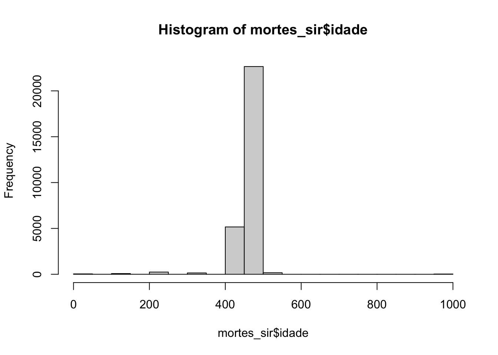

knitr::opts_chunk$set(echo = TRUE, collapse = TRUE, error = FALSE, warning = FALSE, message = FALSE, results = 'asis')Distribuicoes
## remove da memória dados anteriores
rm(list = ls())Bibliotecas
## adiciona as bibliotecas de interesse
pacotes <-
c(
"microdatasus", ##dados do SUS
"janitor", ## manipulação para limpeza dos dados
"tidytable", ## manipular dados
"tidyverse", ##ferramentas
"rcompanion", ## plotNormalidade
"ggpubr" #checar distribuição
)
## regra para se não instalado, instalar
#if(!require(pacotes))lapply(pacotes, install.packages, character.only = FALSE)
lapply(pacotes, require, character.only = TRUE)Dados - Óbitos ES
## qual novo nome
mortes <-
#selecionando dados do SUS
fetch_datasus(
year_start = 2021,
month_start = 1,
year_end = 2021,
month_end = 12,
uf="ES",
information_system = "SIM-DO"
)
## ATENÇÃO
mortES <- process_sim(mortes, municipality_data = TRUE)Ajustar nomes
## Renomear as colunas do data frame
## qual novo nome
mortes <-
## limpar os nomes das colunas dos dados "covid_br"
clean_names(mortes)Nova tabela exemplo SIR sexo,idade,raça
## qual novo nome - mortes com sexo idade raça
mortes_sir <-
## qual arquivo original
mortes |>
## quais colunas eu quero
select.(tipobito,
dtobito,
idade,
sexo,
racacor,
estciv,
esc2010,
causabas_o,
codmunres) |>
## quais filtros quero aplicar
filter.(tipobito == 2, ## 2 = não fetal
(!is.na(sexo)), ## remove NA da coluna Sexo
(!is.na(idade)), ## remove NA da coluna Idade
(!is.na(racacor)) ## remove NA da coluna Racacor
) |>
## limpar os dados da coluna idade removendo caracteres não numéricos
mutate.(
idade = str_replace_all(idade, "\\D+", "") |>
as.numeric() |>
replace_na(0) |>
as.integer()
)Distribuições
Histograma - Hist
hist(mortes_sir$idade)
Corrigindo idade
## substituir a coluna idade existente com as idades corrigidas
mortes_sir$idade <- case_when(
substr(mortes_sir$idade, 1, 1) == "0" ~ 0, ## idade menor de 1 hora
substr(mortes_sir$idade, 1, 1) == "1" ~ as.integer(substr(mortes_sir$idade, 2, 3)), ## horas
substr(mortes_sir$idade, 1, 1) == "2" ~ as.integer(substr(mortes_sir$idade, 2, 3)), ## dias
substr(mortes_sir$idade, 1, 1) == "3" ~ as.integer(substr(mortes_sir$idade, 2, 3)), ## meses
substr(mortes_sir$idade, 1, 1) == "4" ~ as.integer(substr(mortes_sir$idade, 2, 3)), ## anos
substr(mortes_sir$idade, 1, 1) == "5" ~ as.integer(substr(mortes_sir$idade, 2, 3))+100, ## anos (mais de 100 anos)
TRUE ~ NA_integer_
)hist(mortes_sir$idade)QQ-plot
qqnorm(mortes_sir$idade, las = 1)
qqline(mortes_sir$idade, lty = 2, col = "red")tipos de variáveis
Relembrando os tipos básicos de variáveis no R:
fct: significa variável fator, também conhecida como variável categórica.
int: significa uma variável quantitativa \| *números inteiros*.
dbl: significa dupla precisão, uma variável quantitativa que essencialmente é contínua \| *valores decimais*.
lgl: significa valor lógico, categoria verdadeiro ou falso, `TRUE | 1` ou `FALSE | 0`
chr: significa uma variável do tipo texto
date: *datas* \| (y-m-d) = ano-mês-dia
tibble(mortes_sir)A tibble: 28,524 × 9
tipobito dtobito idade sexo racacor estciv esc2010 causabas_o codmunres
1 2 28022021 69 1 4 4 1 J440 320130
2 2 08032021 76 2 1
3 2 11032021 77 1 1 2 1 C349 320320
4 2 29012021 76 2 4 3 1 E789 320210
5 2 29012021 70 1 1 1 1 I639 320130
6 2 03022021 67 2 4 2 0 I639 320130
7 2 08022021 59 1 4 4 3 I630 320130
8 2 27062021 62 2 2 1 5 C12 320210
9 2 14042021 78 1 1 4 5 B342 320520
10 2 14042021 67 1 1 2 9 B342 320520
# … with 28,514 more rows
Rcompanion
rcompanion::plotNormalHistogram(mortes_sir$idade)rcompanion::plotNormalDensity(mortes_sir$idade)rcompanion::plotDensityHistogram(mortes_sir$idade)GGpubr
ggqqplot(mortes_sir$idade)Distributions

Violin and Ridge
Violin
library(ggplot2)
ggplot(warpbreaks, aes(x = tension, y = breaks, fill = tension)) +
geom_violin(trim = FALSE) +
geom_boxplot(width = 0.07) +
guides(fill = guide_legend(title = "Title")) Ridgeline
remotes::install_github("R-CoderDotCom/ridgeline@main")library(ridgeline)
ridgeline(chickwts$weight, chickwts$feed,
mode = TRUE) Ref
POISSON Distribution in R ▷ dpois, ppois, qpois and rpois functions
- spoiler alert - packages
GLM(Generalized Linear Models)